Cliente · Site e design system
CiaTrans
Logística portuária no Porto de Santos: a primeira peça de comunicação de uma empresa com décadas de operação e nenhum material próprio.
- Papel
- Product design ponta a ponta e implementação
- Ferramentas
- Figma, Claude Code, HTML/CSS, axe-core
- Entrega
- Landing page, apresentação comercial e design system
- Status
- No ar
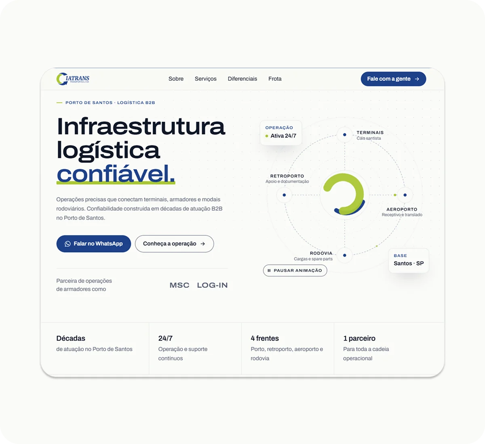
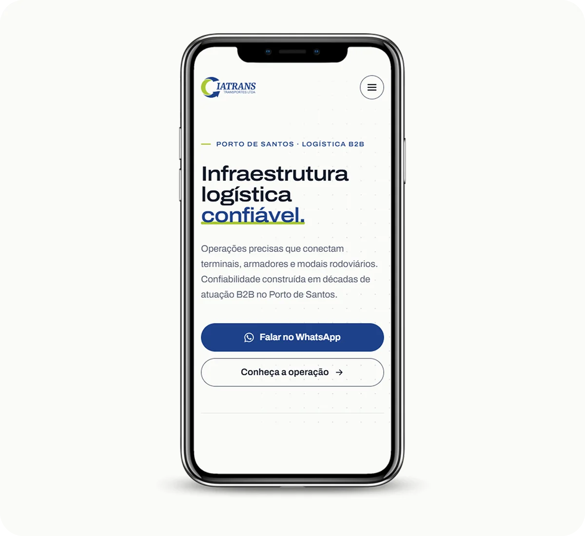
Contexto
A CiaTrans presta suporte logístico no Porto de Santos há décadas: transporte de cargas e de tripulantes, despacho, translados, peças de reposição para navios e remoção de resíduos. Atende armadores, terminais e agentes, e não tinha nenhum material de comunicação próprio. Nem site, nem apresentação para mandar a um cliente novo.
A primeira versão que montei tinha um problema que eu mesmo criei: uma página bonita cheia de coisa que a empresa não faz. Painel de navios atracados, contagem de contêineres, carga de grandes dimensões, números de operações por mês. Tudo plausível para uma transportadora portuária, nada verdadeiro para essa.
Quando a apresentação comercial ficou pronta, com o escopo real descrito pela própria empresa, o site foi refeito em cima dela. Este case é sobre essa correção de rota e sobre o sistema que sobrou dela.
Antes e depois
À esquerda, a versão que inventava uma operação. À direita, a versão que mostra a que existe: em vez de um painel de navios fictício, um diagrama da atuação integrada entre porto, retroporto, aeroporto e rodovia, que é justamente o diferencial da empresa e o único dado que eu podia afirmar.
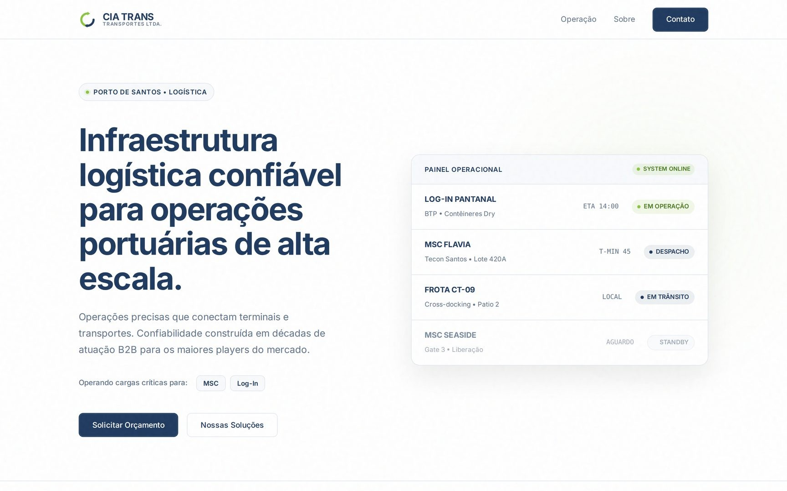
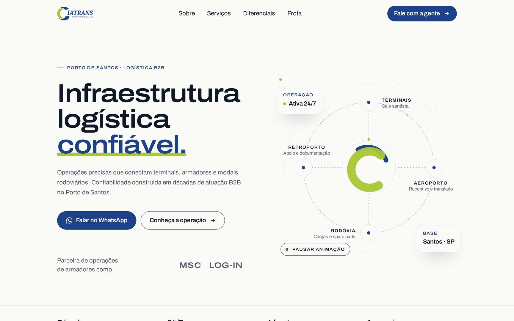
Direção de design
O azul e o verde vêm do logo da empresa, que é o único ativo de marca que existia. A régua foi manter a página clara e sóbria, com o azul-escuro entrando em poucos blocos (pilares, contato, rodapé) para marcar ritmo sem transformar o site num panfleto colorido.
O tom da escrita seguiu a mesma lógica: nada de "soluções inovadoras". A empresa vende previsibilidade em um ambiente onde tempo, documentação e acesso decidem a operação, e a copy fala disso.
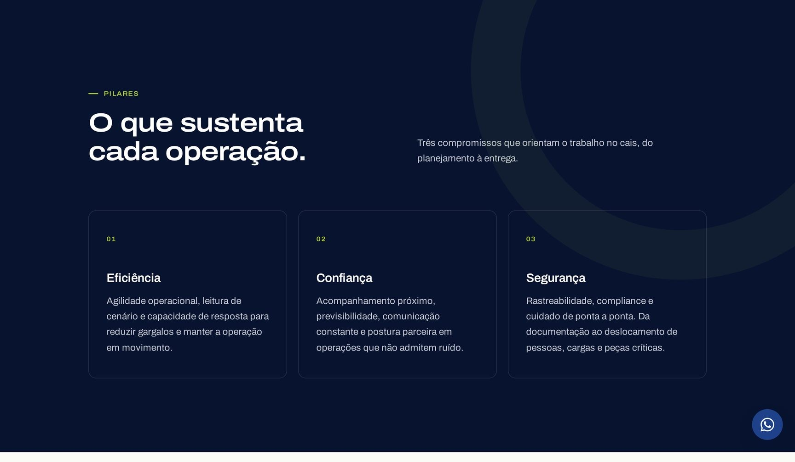
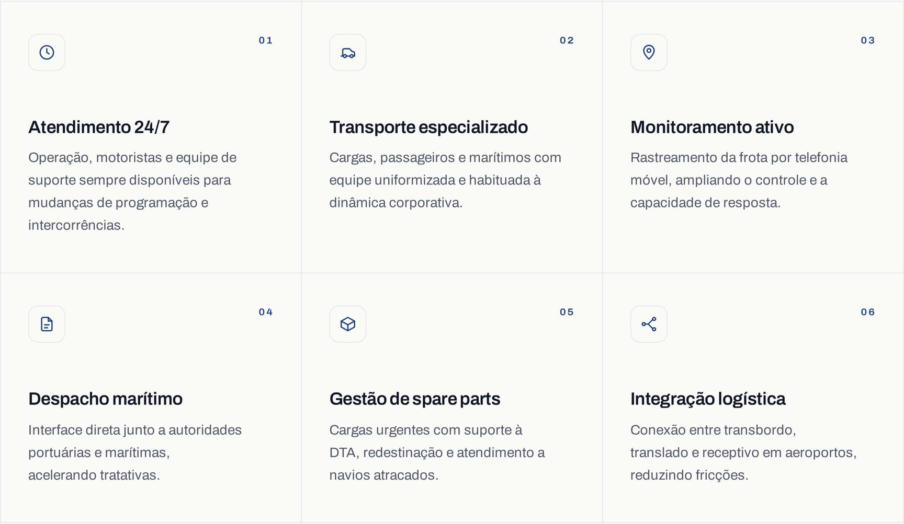
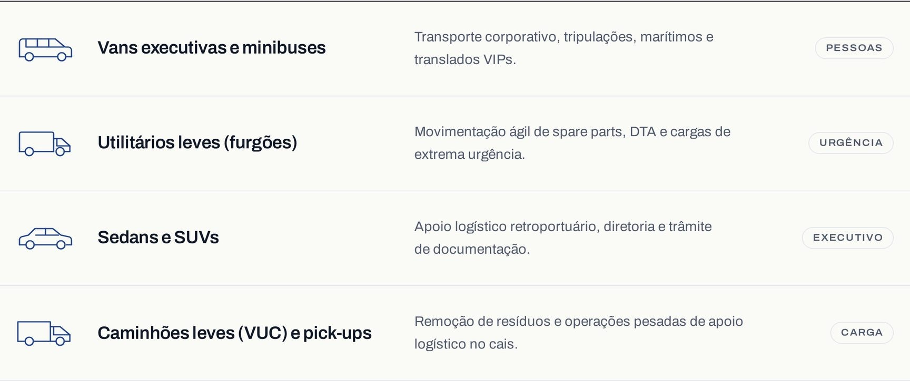
Quatro decisões
O design system cabe em quatro regras. As seções abaixo mostram cada uma aplicada.
-
Menos é mais
Cada papel visual tem um único valor. Se duas opções servem ao mesmo papel, uma delas sai.
-
O fundo troca, o componente não
Título, corpo, acento, linha e fundo mudam de valor nos blocos escuros. Nenhum componente tem cor própria.
-
Personalidade na largura, não em outra fonte
Uma família só, a Archivo. A largura vira decisão de sistema: 118% nos títulos, 108% nos rótulos.
-
Acessível por padrão
Contraste mínimo de 6,5:1 no texto, foco visível e animação que pode ser pausada, desde o primeiro componente.
O sistema em números
Da primeira versão para a final, o sistema perdeu tudo o que sobrava.
- famílias tipográficas
- 4 para 1
- pesos
- 4 para 2
- tamanhos de fonte
- 30 para 5
- valores de cor
- 46 para 10
Cor por função
Em vez de uma paleta com dez valores soltos, cinco papéis: título, corpo, acento, linha e fundo. Cada papel tem um valor na superfície clara e outro na escura, e nenhum componente define cor própria. Os blocos escuros da página só trocam os valores dos papéis, e o resto se ajusta sozinho, como um tema.
O verde-limão é decorativo no claro e só vira texto sobre o azul-escuro, onde alcança 9,5:1 de contraste. O destaque que aparece ao passar o mouse nas listas também não é uma cor nova: é o próprio azul de acento, bem transparente sobre o fundo.
Fora dos papéis existe uma única cor: o vermelho de erro, que só aparece na validação do formulário e sempre acompanhado de uma mensagem em texto.
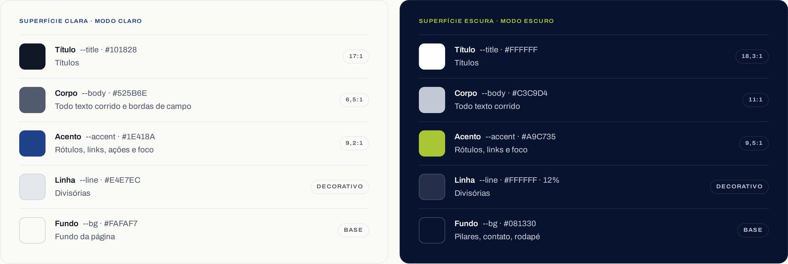
Como a cor chega ao componente
-
Valores
Os dez valores de cor do sistema, nomeados pelo que são.
-
Papéis
Título, corpo, acento, linha e fundo, com um valor no modo Claro e outro no Escuro.
-
Componentes
Usam só os papéis, nunca um valor direto. Por isso nenhum precisa de uma versão escura.
Uma família, um eixo
A primeira versão usava quatro famílias e trinta tamanhos diferentes. A final usa uma só, a Archivo, com dois pesos e cinco tamanhos. A personalidade não veio de uma segunda fonte, veio da largura ajustável da própria Archivo: mais larga nos títulos, com ar de sinalização e pintura de frota, e normal no texto, para não atrapalhar a leitura.
É a decisão de que mais gosto no projeto, porque ela cabe numa frase: a largura virou uma decisão de sistema, não mais uma opção à mesa.
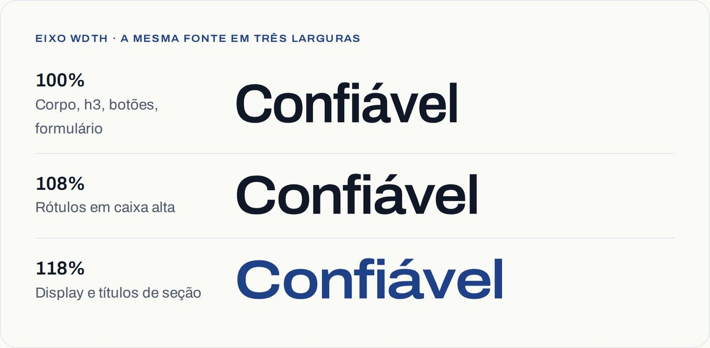
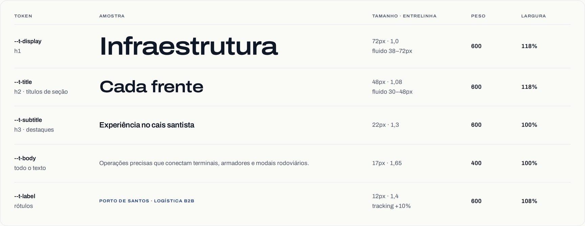
Componentes
Poucos componentes, todos feitos só com os papéis. Como nenhum tem cor própria, funcionam iguais no fundo claro e no escuro.
O botão tem um tamanho e dois estilos, e ao passar o mouse sobe 2px com sombra em vez de ganhar uma cor nova. O chip selecionado muda de cor e ganha um check, para não depender só da cor. O campo com erro sempre mostra a mensagem em texto, e o destaque das linhas da frota é o acento a 5% sobre o fundo, sem mexer no conteúdo.
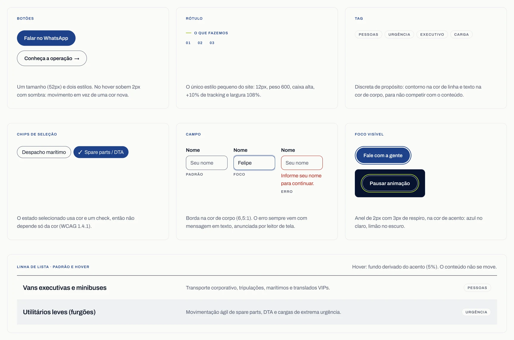
A documentação completa do sistema (princípios, cor, tipografia, componentes e acessibilidade) vive num único frame no Figma, com as cores como variáveis e os modos Claro e Escuro.
Acessibilidade
Testado com axe-core contra as diretrizes WCAG 2.2 nível AA, em telas de 1440px e de 320px.
-
Contraste como regra do sistema
WCAG 1.4.3 · 1.4.11
Cada papel de cor nasceu com a razão de contraste medida. O menor valor de texto da página é 6,5:1, acima dos 4,5:1 exigidos, e as bordas de campo chegam a 6,5:1, contra 1,2:1 da primeira versão, praticamente invisíveis.
-
Movimento que o usuário controla
WCAG 2.2.2
O diagrama do topo anima em loop, então ganhou um botão de pausa e já começa parado para quem pede menos movimento no sistema.
-
Formulário que explica o erro
WCAG 3.3.1 · 3.3.2
O erro deixou de ser só uma borda vermelha: virou mensagem em texto, anunciada por leitor de tela. Os campos opcionais são marcados e os serviços viraram um grupo com título próprio.
-
Teclado do começo ao fim
WCAG 2.4.1 · 2.4.7
Link para pular ao conteúdo, anel de foco visível em todos os controles (azul no claro, limão no escuro), Esc fechando o menu e nenhum elemento focável escondido fora da tela.
-
Cabe em qualquer tela, funciona no dedo
WCAG 1.4.10 · 2.5.8
Nada de rolagem lateral mesmo numa tela de 320px, e todo alvo de toque tem pelo menos 36px.
Resultado
A CiaTrans saiu de nenhum material para três peças que conversam entre si: o site no ar, uma apresentação comercial para enviar a clientes e a documentação do design system que sustenta as duas.
O contato acontece pelo WhatsApp do time, que é por onde a operação realmente responde. O formulário monta a mensagem já organizada (nome, empresa, serviços e detalhes da operação) para que o pedido chegue qualificado em vez de um "olá" solto às três da manhã.
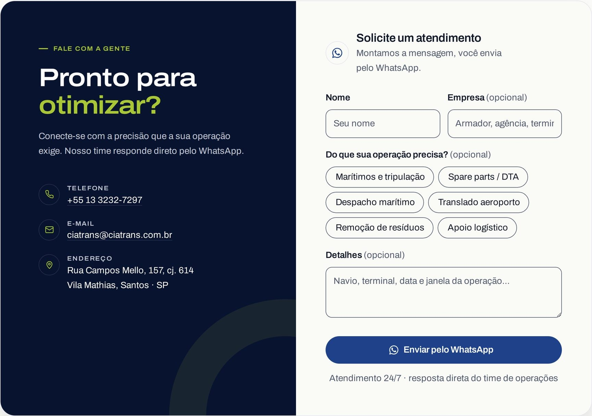
Contato
Gostou do que viu? Vamos conversar.